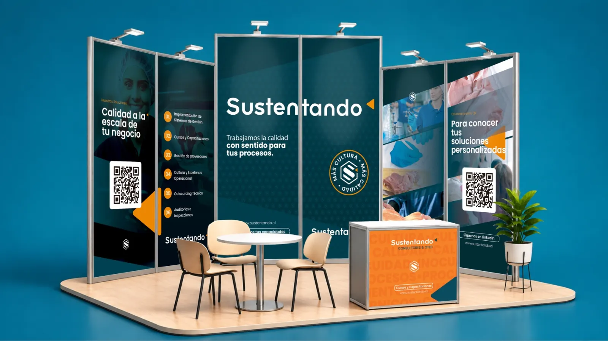
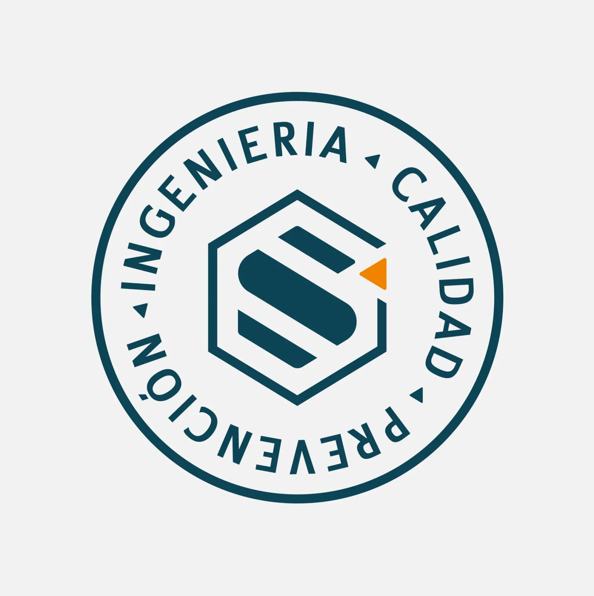
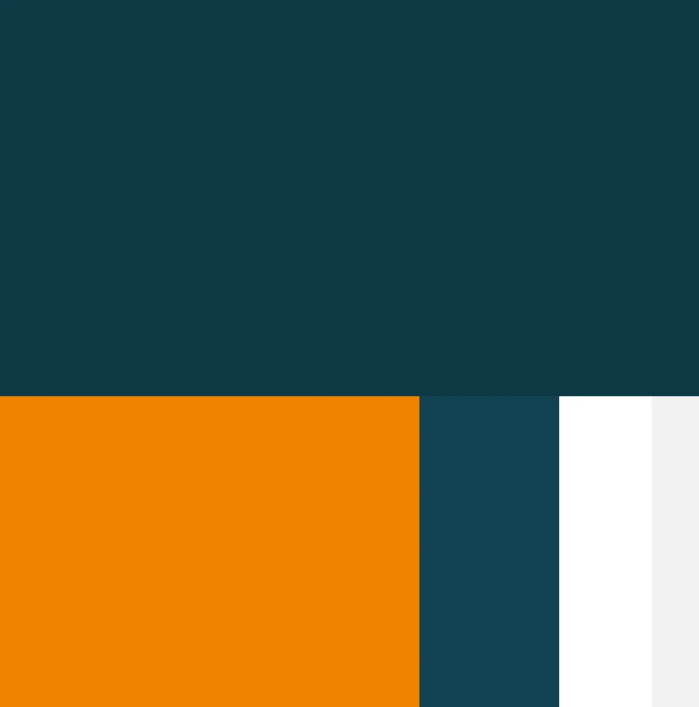
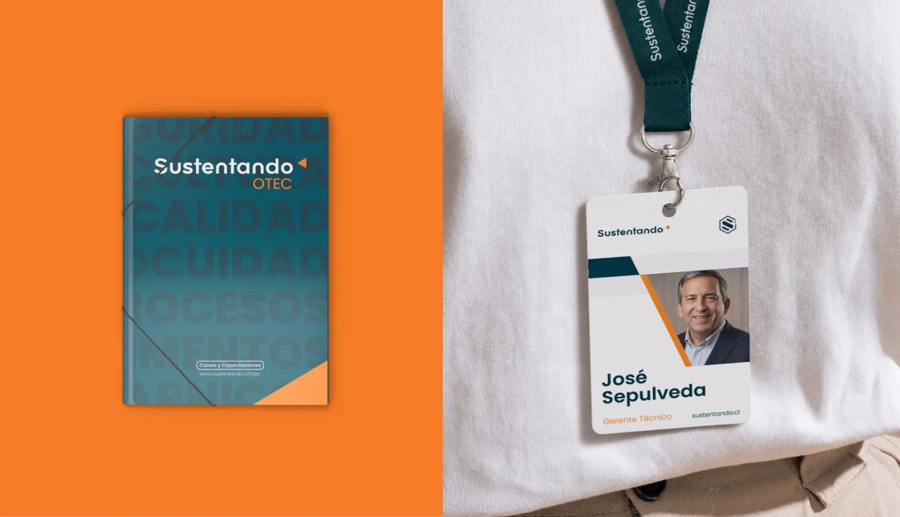
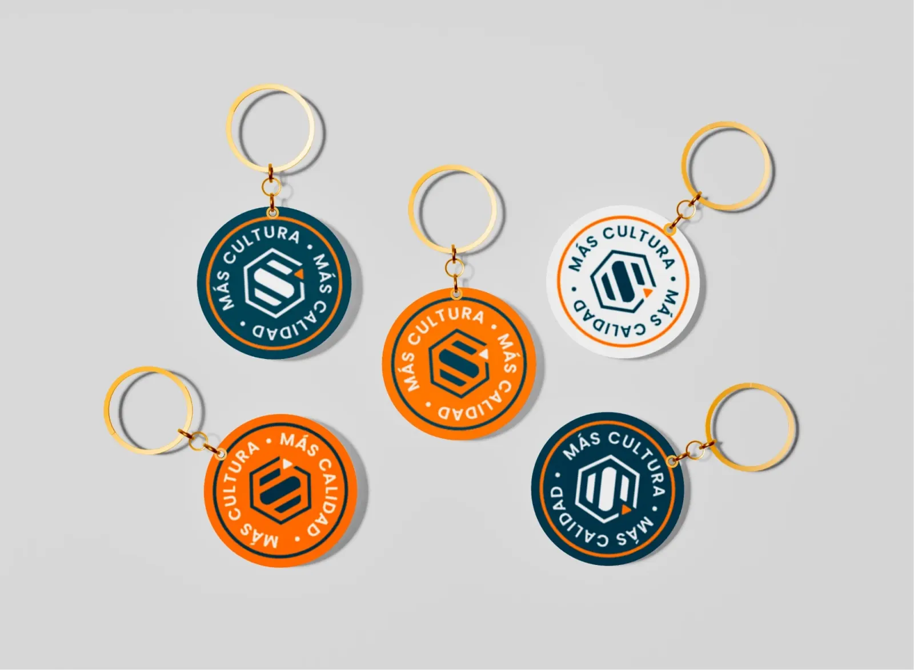
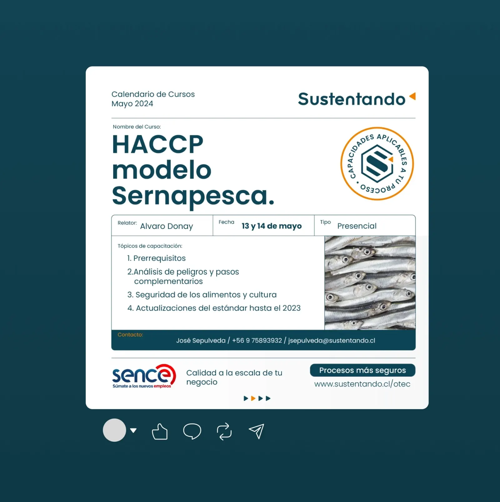
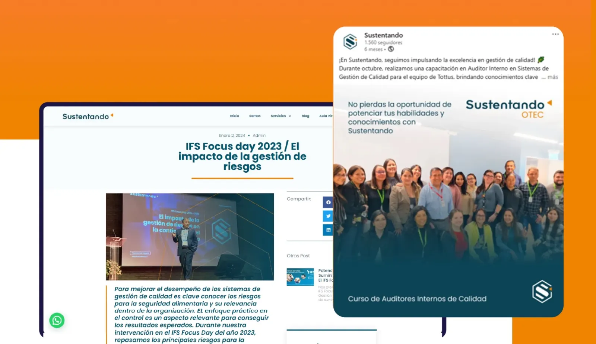

Todo partió por entender qué necesitaba Sustentando en ese momento, no por lo que podía ofrecerle.
Sustentando es una consultora chilena que acompaña a empresas en calidad e inocuidad. En 2022 su prioridad era presentarse de forma profesional: un logotipo, presentaciones comerciales y un sitio web. Diseñé una identidad simple y sólida, pensada como base para lo que vendría.



A medida que la empresa crecía, fuimos sumando capas de trabajo según lo que su equipo necesitaba.
Primero, una estrategia de comunicación B2B para LinkedIn, con plantillas por nivel para que el equipo publicara de forma constante y consistente. Luego, el diseño de los materiales que acompañan sus propios servicios: presentaciones, brochures y señalética de seguridad y calidad para sus clientes.
Hoy rediseñamos su sitio web y diseñé su stand para Inofood 2026.



La confianza de sus clientes la gana Sustentando con su servicio; mi trabajo es que ese servicio se vea y se perciba con la calidad que tiene.
Para lograrlo me involucro como un integrante más del equipo: detecto sus necesidades y carencias, y las resuelvo con diseño y comunicación. El resultado es una empresa consolidada comunicacionalmente, con un valor percibido relevante para sus clientes.
En una consultoría B2B, el cliente decide por la percepción que tiene de un proveedor que todavía no conoce. La comunicación en LinkedIn le ha traído a Sustentando nuevos clientes, y su equipo sigue confiando en mí como alguien que resuelve lo que necesitan en cada etapa.
